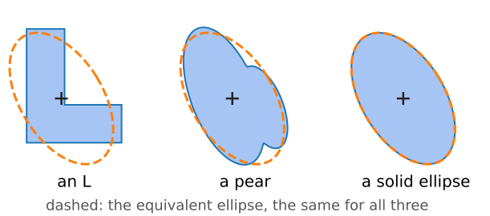
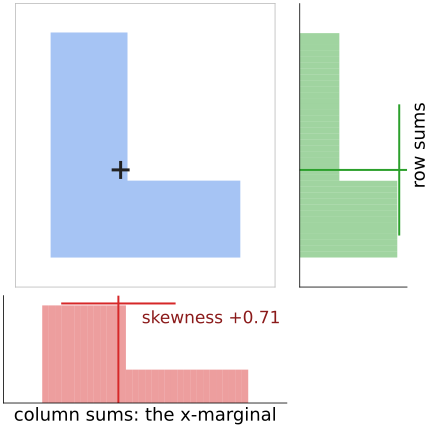
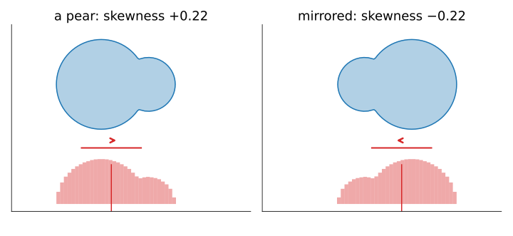
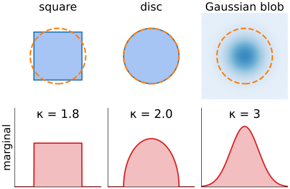
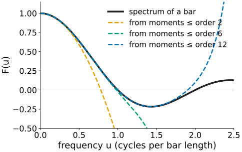
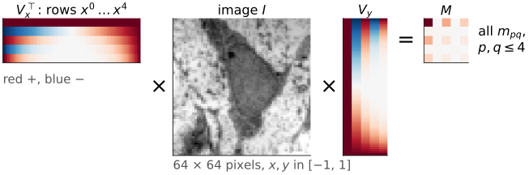
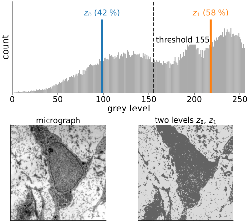

The labelling day summarised an object by its area, centroid and equivalent ellipse: moments up to order 2. Today: all the orders, and what they mean.
A moment is a weighted sum of the image: the weight is x^p y^q.
Read the image as a 2D distribution: mean, spread, skewness, kurtosis.
Infinitely many moments determine the image; a few describe its coarse shape (the link to Fourier).
Computing them: a matrix sandwich, coordinates in [-1, 1], and the pixel as a point or a square.
Slides titled The math give the formulas and proofs; the ideas are complete without them.
Recall: a shape in a few numbers
From the labelling day (regionprops): sums over the pixels of one object.
Aream_{00}, centroid(\bar x, \bar y), second central moments\mu_{20}, \mu_{11}, \mu_{02}.
S = \mu / m_{00} is the covariance of the pixel positions (the PCA unit): its eigenvectors give the orientation, its eigenvalues the equivalent ellipse.
The ellipse is a summary, not the shape. An L, a pear and a solid ellipse can share it. To tell them apart we need higher orders.

One weight per moment
The moment of order p + q is the image summed with the weight x^p y^q:
m_{pq} = \sum_x \sum_y x^p\, y^q\, I(x, y).
m_{00}: weight 1, the total mass (the area of a mask).
m_{10}, m_{01}: weights x and y, the balance point.
m_{20}, m_{11}, m_{02}: how far the mass lies from the axes.
Order 3, 4, …: weights that grow faster towards the edges.
A mask and a grey image use the same formula (I = 0/1 or the grey value). Up to order N there are (N+1)(N+2)/2 moments: 6 up to order 2, 15 up to order 4.
the inner product of f with the monomialx^p y^q; the discrete sum is its Riemann sum with one sample per pixel.
Same idea as a Fourier coefficient, F(u, v) = \langle f, e^{2\pi i(ux + vy)}\rangle: project the image onto a basis function. Here the basis is \{x^p y^q\}.
Central moments use x - \bar x and y - \bar y: \mu_{pq} = \langle f, (x - \bar x)^p (y - \bar y)^q\rangle.
Number of pairs with p + q \le N: \sum_{k=0}^{N} (k + 1) = (N+1)(N+2)/2.
The image as a distribution
Divide by the mass: I / m_{00} is a probability density on the plane. Its moments are the familiar statistics.
order
central moment ÷ m_{00}
reads as
1
\bar x, \bar y
mean (centroid)
2
\mu_{20}, \mu_{11}, \mu_{02}
covariance S: spread and orientation
3
\mu_{30}, \mu_{03}, …
skewness: which way the mass leans
4
\mu_{40}, \mu_{04}, …
kurtosis: flat-topped or peaked
\mu_{p0} only involves x: it is a moment of the marginal, the column sums of the image (the projection onto the x-axis).

Skewness: a pear and its mirror image

Skewness along x: \gamma_x = \mu_{30} / (m_{00}\, \mathrm{sd}_x^3), with \mathrm{sd}_x = \sqrt{\mu_{20}/m_{00}}.
The pear has its bulk on the left and a thin tail to the right: \mu_{30} > 0, \gamma_x = +0.22.
Its mirror image has the same m_{00}, centroid distance and S, but \gamma_x = -0.22. Order 2 cannot tell them apart; order 3 can.
Try it: moments of any order
Kurtosis: a square and a disc with the same S
A square of side a and a disc of radius r = a/\sqrt3 have the same covariance: a^2/12 = r^2/4 along every axis. Their equivalent ellipses are the same circle.
Order 4 separates them. The kurtosis \mu_{40} / (m_{00}\,\mathrm{sd}^4) of the marginal:
square: the marginal is flat (uniform): 1.8;
disc: the marginal is a half-ellipse, higher in the middle: 2.0;
a Gaussian blob: 3.
In the demo (side 30 pixels): 1.797 and 1.990.

The math: marginals, skewness, kurtosis
The marginal g(x) = \int f(x, y)\,dy has the moments
A reflection x \to -x multiplies \mu_{pq} by (-1)^p: odd orders in x change sign.
How many moments determine an image?
All of them: a bounded image of finite extent is determined by its infinite set of moments (Hu, 1962). Stated here, not proved.
A few describe the coarse shape: mass, position, spread, lean, peakedness.
Why “coarse”? Moments are the Taylor coefficients of the Fourier transform at zero frequency. Low orders fix the spectrum near the origin, that is the slow, large-scale variation. Fine detail lives at high frequencies and needs high orders.
Getting the image back from finitely many moments is the question of the orthogonal-moments unit.

The math: moments and the Fourier transform
Expand the kernel of the Fourier transform in a Taylor series:
F(0, 0) = m_{00}; \partial F/\partial u\,(0,0) = -2\pi i\, m_{10}; in general m_{pq} is a derivative of F at the origin.
If all moments are known (and the series converges, true for bounded f of finite support), F is known everywhere, hence f.
Truncating at order N fixes F only in a neighbourhood of (0, 0): low frequencies.
Computing moments
Separable: m_{pq} = \sum_y y^q \big(\sum_x x^p I(x, y)\big). With the matrices (V_x)_{xp} = x^p and (V_y)_{yq} = y^q, all moments at once are one matrix sandwichM = V_x^\top I\, V_y: cost about N times the number of pixels.
Scale the coordinates to [-1, 1] first. In pixel units 255^{10} \approx 1.2 \times 10^{24}: with 16 significant digits, everything below 10^{8} in such a sum is lost.
Pixel as a point or as a square. Summing x^2 at the pixel centre ignores the pixel’s own width. Integrating over the unit square adds \int_{-1/2}^{1/2} t^2\,dt = \tfrac1{12} per pixel: \mu_{20} grows by exactly m_{00}/12. Small for a large object, the whole story for a single pixel (0 vs 1/12).

The math: moments of a polygon (Green’s theorem)
For a region bounded by a polygon (a snake, a traced contour) the area integral becomes a sum over edges. Green’s theorem: \iint_\Omega \big(\tfrac{\partial Q}{\partial x} - \tfrac{\partial P}{\partial y}\big) = \oint_{\partial\Omega} P\,dx + Q\,dy. With vertices (x_i, y_i), i = 0, \dots, n-1 (counter-clockwise, indices mod n) and c_i = x_i y_{i+1} - x_{i+1} y_i:
m_{00} = \tfrac12 \sum_i c_i \quad\text{(the shoelace formula of the labelling day)},\qquad m_{10} = \tfrac16 \sum_i (x_i + x_{i+1})\, c_i.
Every m_{pq} has such an edge formula (Steger, 1996). The same idea in 3D (divergence theorem) gives the moments of a closed mesh.
Moments elsewhere: a moment-preserving threshold
The histogram is a 1D image of grey levels (the thresholding day). Its moments \sum_g g^k\, h(g) are the mean grey level, the variance, …
Tsai’s threshold (1985) chooses two grey levels and a threshold so that the binary image has the same first three moments as the original histogram. Same definitions, one dimension, a different use.
On the course micrograph: z_0 = 99, z_1 = 218 with 42 % and 58 % of the pixels, threshold 155.

Summary
m_{pq} = \sum x^p y^q I: the image projected onto the monomial x^p y^q; (N+1)(N+2)/2 moments up to order N.
As a distribution: order 1 = mean, 2 = covariance, 3 = skewness (which way it leans; flips under mirroring), 4 = kurtosis (square 1.8, disc 2.0).
All moments determine the image; low orders describe the coarse shape (Taylor coefficients of the spectrum at zero frequency).
Compute separably, in coordinates scaled to [-1, 1]; a pixel as a square adds 1/12 per pixel to \mu_{20}.